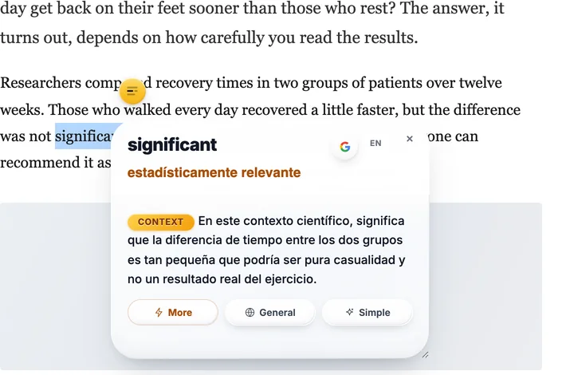

The facts, side by side
| Google Translate | DeepL | |
|---|---|---|
| Languages | 249 | 125 |
| Free use | Unlimited on the website | 50,000 characters a month |
| Paid from | Free; Cloud Translation API is paid by volume | About €7.49/month, billed annually |
| Documents | Yes, on the website | 1 a month free; 3 on the cheapest paid plan |
| Tone control | No | A formality setting, on some languages |
| Glossaries | No | Yes, 1 free |
| Browser extension | Yes, Google's own | Yes, DeepL's own |
Language counts from Google's own support page and DeepL's developer documentation, both read on 27 September 2026. DeepL's list has grown a lot: the old "DeepL only does about thirty languages" is out of date.
Where DeepL earns its reputation
Fluency. Between big European languages it writes sentences a native speaker would actually write, not just correct ones. It also gives you two controls Google does not have. A formality setting on several languages, so you can ask for the polite form. And glossaries, so a term always comes out the way you want it.
DeepL publishes blind tests showing readers preferring its output. That is a company testing itself, so take it as such. It does match what a lot of translators say, which counts for something, but it is not independent evidence.
Where Google Translate wins outright
Coverage. 249 languages against 125 is not a small gap. If you read Amharic, Tagalog, Nepali or most of the world's languages, it is the whole question. A better sentence in a language the tool does not have is worth nothing.
No limit and no account. The website translates as much as you like, free. DeepL's free tier stops at 50,000 characters a month. That is about fifteen to twenty pages of dense text, which sounds generous until you paste one report into it.
It is everywhere. Built into Chrome, into search results, into a camera. For reading the web quickly, that matters more than phrasing.
The thing they have in common
Both translate a sentence at a time. That is the shared strength and the shared limit. Give either one a whole paragraph and you usually get something usable. Give either one a single word and it has nothing to work from, so it answers with that word's most common meaning. In a paper, a contract or a lab report, that is often not the meaning in front of you.
This is also why the answer changes when you paste more text. Neither tool is being inconsistent. It is just reading more than you gave it the first time. I wrote about how that works in why Google Translate gets words wrong, and and what the accuracy studies found in how accurate Google Translate is.
How to choose, in three lines
DeepL
If it covers your pair and the tone matters. Use the formality setting.
Coverage, no limit, already in your browser.
Neither
You want the meaning for this sentence, not the page moved into your language.
The third case, which is the one I build for
You can read the page. You understand the sentence. Then one word stops you, and it is a word you already know. Significant in a trial. Positive in a lab result. Consideration in a contract. Translating it gives you the everyday meaning in your own language, which is the same wrong answer in a different accent.

It is not a translator and does not try to be. For a document, use one of the two above. The answers come from a model and can be wrong; the EN button shows the same answer in English so you can check one quickly.
Questions
Is DeepL more accurate than Google Translate?
For European languages and formal prose, many people prefer how DeepL phrases things, and DeepL publishes its own blind-test comparisons. Independent results vary by language pair, and neither company's marketing is evidence. What is certain is that both translate a sentence at a time, so both are weakest on a single word with several meanings.
Is DeepL free?
There is a free tier: 50,000 characters a month, one document translation, one glossary. Paid plans start at about €7.49 a month billed annually. Google Translate's website is free with no character cap.
How many languages does each support?
Google Translate lists 249 languages and varieties; DeepL's current documentation lists 125. If your language is not on DeepL's list, the comparison is over before it starts.
Which should I use for a document?
DeepL, if it covers your languages and the tone matters. A contract, a cover letter, anything a person will judge you by. Google, if you need coverage or speed, or a language DeepL does not have.
Which is better for one word I am stuck on?
Neither, and that is not a criticism of either. A translator has to pick one meaning, and with a single word it has no sentence to pick from, so you get the most common sense rather than the one your text is using.
Sources
- DeepL plans and pricing. The free tier's 50,000 characters and the paid prices, read 27 September 2026.
- DeepL supported languages. 125 entries in the table on that date.
- Google Translate language support and Google's 2024 expansion announcement.
Free. Chrome, Brave and Edge install from the Chrome Web Store; Firefox from addons.mozilla.org.